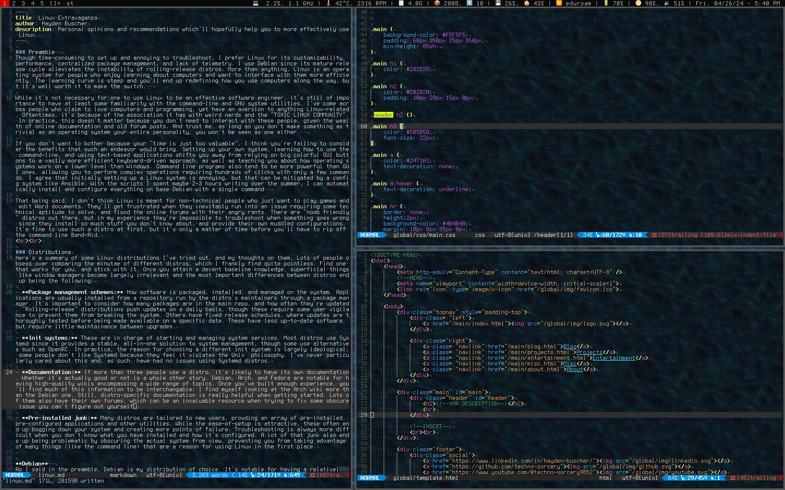

Last Updated: May 29, 2024

Preamble
Though time-consuming to set up and annoying to troubleshoot, I prefer Linux for its customizability, performance, centralized package management, and lack of telemetry. I use Debian since its mature release cycle alleviates the instability of rolling-release distros. More than anything, Linux is an operating system for people who enjoy learning about computers and who want a system customized to their needs. The learning curve is steep, but it's well worth it to make the switch.
While Linux isn't a prerequisite to be an effective software engineer, it's still important to have some familiarity with the command-line and Linux system utilities. I've come across people who claim to love computers and programming, yet have an aversion to anything Linux-related. Oftentimes, it's because of the association it has with weird nerds and the "TOXIC LINUX COMMUNITY". You really don't need to interact with these people, given the wealth of online documentation and old forum posts there to help you (I learned this way). And, as long as you don't base your personality around something as trivial as an operating system, you won't be seen as one either.
If you don't want to bother because your "time is just too valuable", I think you're failing to consider the benefits that such an endeavor would bring. Setting up your own system, learning how to use the command-line, and using text-based applications shifts you away from relying on GUIs to a vastly more efficient, keyboard-driven approach, and teaches you how operating systems and software work on a low-level. Command line programs are usually be more powerful than their GUI counterparts, letting you to perform complex operations with only a few commands. I agree that setting up a Linux system is annoying, but that is mitigated with a config system like Ansible. With the Ansible scripts I wrote last summer, I can automatically install and configure my system with only a few commands.
That being said, I don't recommend Linux for non-technical users who only want to play games and edit Word documents. They'll get frustrated when they inevitably run into an issue requiring some technical aptitude to solve, and flood the forums with their angry rants. There are "noob friendly" distros out there, but in my experience they're impossible to troubleshoot when something goes wrong since they install so much pre-configured stuff. It's fine to use such a distro at first, but it's only a matter of time before you'll have to rip off the command line Band-Aid.
Distributions
Here's a summary of some Linux distributions I've tried out, and my thoughts on them. People tend to obsess over the minutae of different distros, which I frankly find pointless. Find one that works for you, and stick with it. Once you attain a decent baseline knowledge, superficial things like window managers become easy to swap (and thus irrelevant), and the most important differences between distros end up being the following:
-
Package management schemes: How software is packaged, installed, and managed on the system. Applications are usually installed from a repository run by the distro's maintainers, through a package manager. It's important to consider how many packages are in the main repo, and how often they're updated. "Rolling-release" distributions push updates on a daily basis, though these require some care to prevent them from breaking the system. Others have fixed release schedules, where updates are thoroughly tested before being made available after a few months or years. These have less up-to-date software, but require little maintenance between upgrades.
-
Init systems: These are in charge of starting and managing system services. Most distros use Systemd since it provides a stable, all-in-one system management solution, though some use alternatives like OpenRC. In practice, the reasons for choosing a different init system are largely ideological; some people don't like Systemd because they feel it violates the Unix philosophy. I've never really cared about this and, thus, have had no issues using Systemd distros.
-
Documentation: If more than three people use a distro, it's likely to have its own documentation. Whether it's actually good or not is a whole other story. Debian, Arch, and Fedora are notable for having high-quality wikis. Once you've gained enough experience, you'll find a lot of information to be interchangeable between distros; I find myself looking at the Arch wiki more than the Debian one. Still, distro-specific documentation is really helpful when getting started. Lots of them also have their own forums, which are an invaluable resource.
-
Pre-installed junk: Many distros are tailored to new users, providing an array of pre-installed, pre-configured applications and other utilities. While the ease-of-setup is attractive, these often end up bogging down your system, creating more points for failure and making troubleshooting a pain. A lot of that stuff also obscures the actual system from view, preventing you from taking advantage of things like the command line which are "the point" of using Linux in the first place.
Debian
As I said in the preamble, Debian is my distribution of choice. It's notable for having a long period between releases, usually around two years. Though that's a while to wait for software updates, the extensive testing that takes place during that time ensures most things work without issue. This greatly reduces the amount of care and "baby-sitting" needed to keep software up-to-date and make sure it doesn't break. Debian also has one of the largest repositories of any distribution, with over 59,100 packages at the time of writing.
Debian is split into three different versions: Stable, Testing, and Unstable. Stable is the standard version with bi-yearly releases, though bug fixes and security patches are released as needed. Since I rarely need up-to-date software, it's the one I go with. Testing contains packages that have spent 2 - 10 days in Unstable without any serious bugs, but still need further testing. It usually has newer software versions, but this comes at the cost of a higher potential for breakage. Finally, Unstable is a rolling-release version of Debian; it's basically what you'd get if you crossed Arch with Debian.
Arch
Arch is one of the most popular distros, and for good reason. It has one of the largest software repos, up-to-date software, by far the best wiki, and a very active community. That said, by virtue of its rolling-release model, it's very possible to nuke your system after software upgrades. The recommendation is to check the Arch forums before each one (best done every few days) to make sure there aren't any major issues. Though the Arch maintainers do a good job of releasing fixes ASAP, I'd rather take it easy with Debian stable.
Ubuntu and Friends
Most people start with some flavor of Ubuntu, myself included. It's widely promoted as a beginner-friendly distro with a Windows-esque GUI and an assortment of included software. Though it uses the same package manager as Debian, it has its own repositories which are updated more frequently. It's easy to install and use, but is a real pain to fix once something breaks. It also uses the controversial Snap packaging system, which relies on a proprietary backend and suffers from poor performance. That said, it's far from the worst Distro, and it provides people with an easy starting point into Linux.
There are many Ubuntu variants out there, like Xubuntu, Kubuntu, and Lubuntu. The main difference between these is the software (primarily the desktop environment) they come with. You can change all this stuff in standard Ubuntu, but these cater to those who can't/don't want to do it themselves.
Manjaro
Another distro I used early on. Basically the easy-mode version of Arch. Manjaro gives you the choice between several pre-installed desktop environments (KDE, GNOME, Xfce, etc.), and uses its own repos. I didn't use it for long before switching to regular Arch (and eventually switching to Debian). Keep in mind it suffers from the same "Pre-installed junk" issue as Ubuntu, and requires a similar level of attention to upgrades as Arch.
Window Managers
Unless you're running a server or are machochistic enough to work from the TTY, you're going to be displaying windows and other GUI elements. The two main types of window managers are floating WMs, and tiling WMs. Floating WMs are most like Windows and MacOS- you can arbitrarily resize, move, and stack windows on top of each other. Tiling WMs organize windows into non-overlapping "tiles", which are usually manipulated through keyboard shortcuts. While less familiar than floating WMs, tiling WMs offer notable efficiency advantages to those who have multiple windows open side-by-side. Within the realm of tiling WMs are automatic tilers, which automatically conform windows to a selected layout, and manual tilers, which require the user to specify how to spawn each window. I like automatic tilers because they're faster and simpler to use, though some prefer the precise control of manual tilers.
There are also desktop environments, which bundle WMs with an assortment of other applications and utilities. This includes GNOME, KDE, and Xfce. While easy to install and use, I don't recommend them.
dwm

dwm is a top-notch automatic tiling WM, and what I've used for the past several months. It's fast, minimalistic, and highly extensible.
If you've try downloading a binary from your distro's repo, you're doing it wrong. Rather than reading config files or loading patches, suckless software's settings are encoded in C variables, and additional features are provided by way of patches. This means you must compile from source every time you change your dwm configuration, a tedious but relatively easy process. I recommend watching Mental Outlaw's video on the process here. If that's too daunting, you could try my personal build (info in the readme). It has a solid set of patches pre-installed, and (what I believe to be) common-sense keybinds. If you also want a list of recommended patches, also follow that link.

One piece of software I recommend using with dwm is dwmblocks. Specifically, Luke Smith's build of dwmblocks is a clickable, asynchronous status bar with which you can run all your shell script modules. It supports signals too, so you can instantly update things like volume and brightness levels.
Another is rofi, a multi-purpose application launcher and window switcher that replaces dmenu. Unlike dmenu it can display .desktop files, a requirement if you rely on Flatpaks like I do. My configuration looks identical to dmenu, as to be minimally intrusive.
spectrwm
This one pretty closely mimicks dwm, though it comes with a lot of quality-of-life features that aren't present in the base build. I used it for around half a year, when I was too lazy to set up dwm properly. Configuration is done through a regular config file, meaning no compilation is required. It's a decent choice if you have an extreme aversion to C for some reason, but still want a solid automatic tiler.
i3
My experience with i3 comes from using it on other peoples' computers, but it seems like a good choice if you want a manual tiler. I don't, hence why I haven't used it much. It comes with some nice pieces of software like i3bar and i3lock (the latter of which I use) and, for the C-adverse, uses a regular config system.
FVWM
FVWM is a classic, highly-configurable floating window manager with a lineage dating back to the early days of Linux. Although I don't like floating WMs, I nevertheless recommend FVWM because it looks cool, and occupies a special place as the first WM I used for an extensive period of time. It uses a powerful config language called "fvwmscript", with which you can build status bars, menus, and custom prompts. Though it follows the retro "motif" style by default, you can configure it to look modern with flat buttons and borders.
Terminal Emulators
Terminal emulators are necessary for interacting with the shell, one of the biggest reasons for using Linux in the first place. Though they all do the same basic thing, some terminal emulators offer features like tabs, transparency, and image framebuffer support. Some like Kitty and Alacritty offer GPU acceleration, though I'd avoid these as they're resource hogs.
st
st is Suckless' go at a terminal emulator, and a good one at that. The config system mirrors that of dwm, for better or for worse, and like dwm, it's easily extensible through the application of C patches. It's also very lightweight, and is my personal choice of a terminal emulator. Keep in mind that it comes with basically no functionality by default, and must be patched to have features like scrollback and transparency.
xterm
xterm is the standard Xorg terminal emulator. It's been around forever, and is capable of emulating a ton of obscure terminals nobody uses anymore. Despite being covered in "warts", it performs well and uses little in the way of system resources. It also comes support for sixel image rendering, and configuration through Xresources.
urxvt
urxvt functions similarly to xterm, but with much of the fat cut out. Though it doesn't support all the terminals xterm does, it can be extended with Perl scripts. Additionally, it provides more configuration options, and can be made to do transparency.
terminator
Terminator is much heavier than the previous three options, but includes features like session tiling, tabs, and GUI-based configuration. I used it early on, though switching to tiling WMs made its features largely redundant.
Multimedia
I don't have much experience with multimedia programs, mostly because I chose ones that worked well off-the-bat and stuck with them. I'd recommend either going for an all-in-one program like VLC, or sticking to a small UNIX-like CLI ones. Both approaches are equally valid, though I prefer the latter.
feh
Feh is a pretty good image viewer. It can also display wallpapers, and comes with a handy thumbnail mode. Not much to say here, it lets you look at images.
sxiv
sxiv does... almost the exact thing as feh, except it's even more light-weight. It comes with Vim bindings by default, which is pretty neat. I've thought about switching over from Feh, but haven't cared enough to do so.
mpv
mpv is a media player for playing back videos and audio. It's launched from the command line, but opens up to a basic GUI during playback. While good for video playback, it lacks features like playlists which make it inadequate for listening to music offline. Still, I'd highly recommend trying it out.
ncmpcpp
I'll be honest, ncmpcpp is one of the worst named pieces of software to ever exist- I've had to set up an alias because I can't remember the complete gibberish its creator thought qualified as an appropriate name. That aside, it's a truly great offline, TUI music client. It works with mpd (music player daemon) which is tedious to set up, but lets you play music even when the window is closed. You can import music library folders, search through songs, shuffle, and even access a built-in music equalizer.
VLC
VLC is an all-in-one media playback solution. It sports an extensive GUI, and has support for a multitude of media formats and streaming protocols. It's resource heavy, but does basically everything you'd want. I used it for many years, but ended up switching to smaller, UNIX-like applications. I still think it's worth a look though, especially if you want a media player that "just works".
Zathura
Zathura is a PDF viewer that launches from the command line and uses Vim bindings by default. It's worked very well for me, though unfortunately it has poor support for other formats like EPUBs. Despite this shortcoming, I use it for all my PDF-viewing needs.
Text Editors
Though the legendary "Text Editor Wars" have long since passed, many Linux users are still divided across the Emacs and Vim camps. Despite the advent of sophisticated IDEs, these editors have remained in wide usage. For editing text files and working on simple programming projects, their flexibility and lightweight nature can't be beat.
Vim
Vim is one of those things which seems impossible to learn in the beginning, but within a few days you can't use anything else. Unlike traditional editors, Vim is modal meaning there are separate "modes" for editing text, selecting text, and traversing files. This means almost no commands require the usage of modifier keys, which is imporant since Vim has so many of them. Many a time I've wished to do something in Vim, and found it to already be a there. Another major advantage of this is that your hands never leave the keyboard, resulting in a large productivity boost. And, if there's a feature you want which isn't included with base Vim, there's likely a plugin for it.
These days, lots of people seem to be using Neovim (myself included). I don't really know the specifics, but it has built-in Lua support, supposedly better support for async plugins, and miscellaneous performance improvements over regular Vim. I don't really have an opinion on it, to be honest.
Emacs
Calling Emacs a "text editor" is a massive understatement, with its disciples considering it an "operating environment" above all else. The centerpiece of Emacs is the E-LISP interpreter, which can run programs ranging from Tetris to an email client, to (yes) the built-in text editor. You're meant to do most of your work in Emacs, only stepping into the harsh world outside if strictly necessary. I think Emacs is a very cool piece of software, but I haven't felt a need to switch over from Vim (if anything, I vastly prefer Vim's modal editing style). I was contemplating trying Orgmode for a while, but deemed it unnecessary. I really don't think I'm doing Emacs justice though, and highly recommend checking out DistroTube's videos on it.